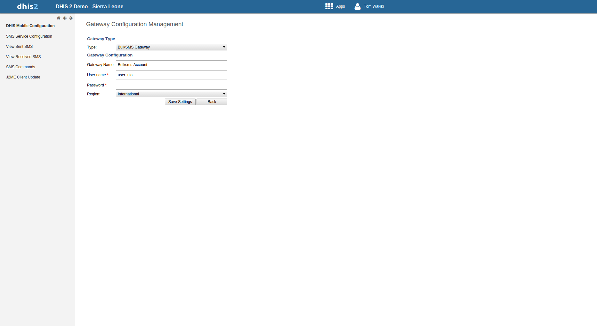
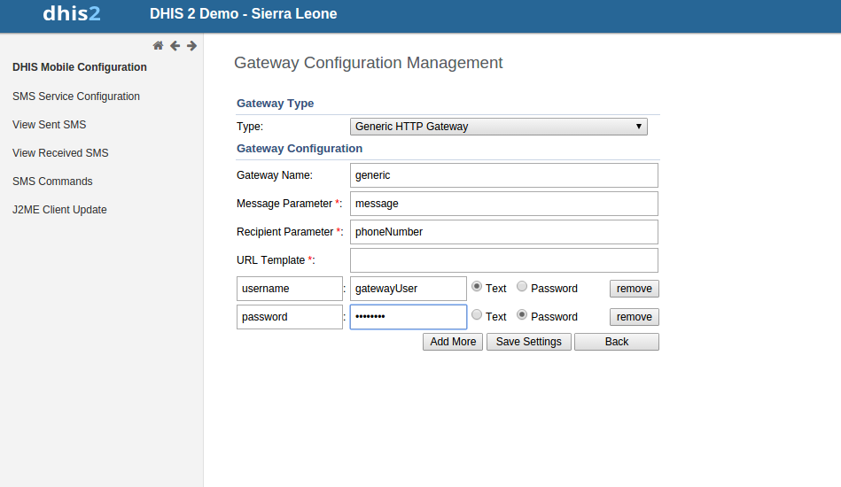

SMS Service is a generic service used for sending/receiving SMS. Any other DHIS2 module can include this service and utilize it to send and receive SMS from users or workers in the field.
There are few pre-requisites in order to make this service functional. There are two ways to complete these steps. One way is to configure gateway from the GUI in Mobile Configuration Module. The other way is to use SMS Web Api.
Configure SMS Gateway
There are five different types of Gateways supported by SMS Service. SMS can be sent if any one of the gateway is configured. If more than one gateways are present, then they will be used in round-robin fashion for load balancing. There are different parameters for different type of gateway. The Gateway can be configured in GUI in Mobile Configuration Module as shown in the figure. More information about parameters needed to configure gateway can be found in Gateway Configuraitons
|  |
Many DHIS2 instances are using GenericHttpGateway to connect to their local gateways. These local gateways provides HTTP APIs for sending SMS. In new GenericHttpGateway it is now possible to configure url parameters provided in their APIs. For example
http://gateway.com/sendMessage?username=AA&password=xxxxx&message=testing&msisdn=9999. In this url username, password, message, msisdn are parameters that are required by external gateways. Now in GenericHttp these parameters are configurable which was not possible in previous releases.
Making is configurable will help DHIS2 to interact with other gateways which have different url formats.
|  |
Below table shows the parameters required for configuring gateway.
Table 21.3. Gateway Configuration Parameters
| Parameter | BulkSMS Gateway | Clickatell Gateway | Generic HTTP Gateway | Description |
|---|---|---|---|---|
| Gateway Name | Optional | Optional | Optional | Used as gateway identity. Default name will be stored in case this parameter is not configured. Its use is recommended |
| User Name | Required | Required | Required | Used for API authentication |
| Password | Required | Required | Required | Used for API authentication |
| Auth-Token | N/A | Required | N/A | Used for API authentication |
| MessageParameter | N/A | N/A | Required | Message query parameter. For example http://gateway.com?message=Hi |
| RecipientParameter | N/A | N/A | Required | Recipient query parameter. For example http://gateway.com?phoneNumber=47XXXXX |
| URL Template | N/A | N/A | Required | Url Tempalte is only required in case of GenericHttpGateway . For example "http://smsgatewa1.com" |